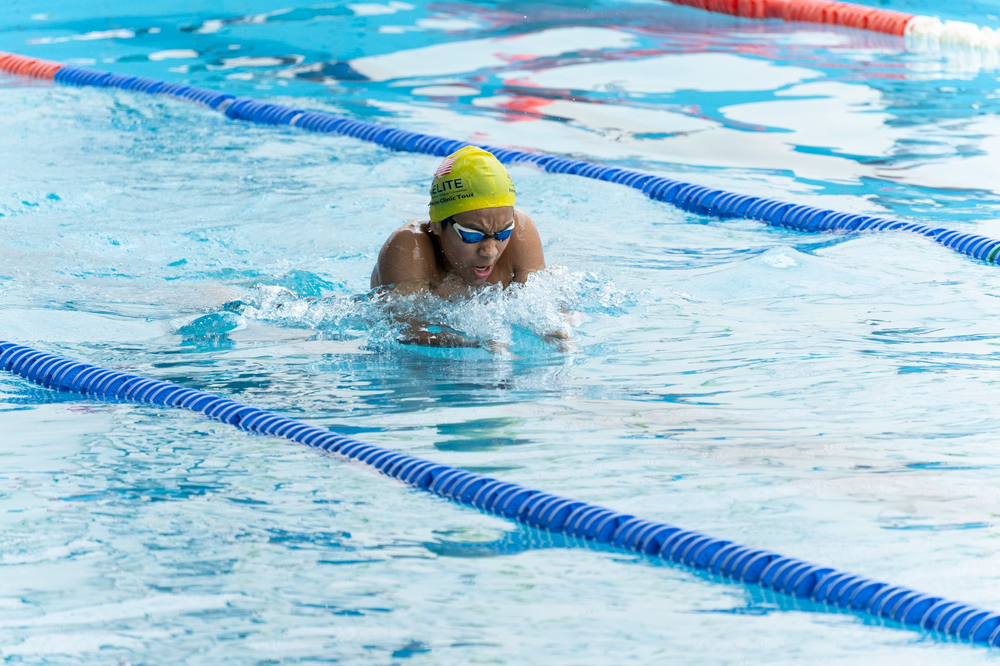

A Championship Moment Worth Celebrating
When Watson Nguyen touched the wall first in the 50-meter breaststroke at the USA Swimming National Championships, it was a moment that reverberated far beyond the pool deck. For young athletes across the country — including those training right here in Wesley Chapel and Land O' Lakes — his victory serves as a powerful reminder of what dedicated, focused preparation can produce.
Nguyen's win didn't happen overnight. Behind every national title is a story of early mornings, disciplined training, and an unwavering belief in the process. That story is one that every young swimmer can begin writing for themselves, no matter where they are in their aquatic journey.
The 50-Meter Breaststroke: A Race That Demands Everything
The 50-meter breaststroke is one of the most unforgiving events in competitive swimming. There is no room for a slow start, a broken rhythm, or a hesitant turn. Every fraction of a second matters, and success in this event requires a combination of explosive power, precise technique, and sharp mental focus.
For young swimmers who are still developing their strokes, this is an important lesson: fundamentals matter more than speed in the early stages of training. Building a strong, technically sound breaststroke now creates the foundation for the kind of elite performance that wins national titles later.
Key Elements That Set Elite Breaststrokers Apart
- Pullout technique: The underwater pullout off the wall is often where races are won or lost. Mastering a streamlined, powerful pullout gives swimmers a measurable edge.
- Timing and rhythm: Breaststroke is uniquely rhythmic among the four strokes. Swimmers who develop a natural, consistent timing between their pull, kick, and glide move through the water more efficiently.
- Hip flexibility: A strong breaststroke kick depends heavily on hip and ankle flexibility. Young athletes who invest in dryland stretching and mobility work often see significant improvements in the water.
- Race-day mindset: Champions like Nguyen don't just train their bodies — they train their minds. Learning to manage nerves, stay present, and execute under pressure is a skill that develops over time with experience.
Bringing National Inspiration to Local Pools
Stories like Nguyen's matter deeply for young athletes in the Tampa Bay area because they make the extraordinary feel achievable. Every elite swimmer once stood at the edge of a pool wondering if they were good enough. What separated those who went on to compete at the national level was not natural talent alone — it was consistent effort guided by quality coaching.
At Nexar Aquatic Academy, we work every day to give swimmers in Wesley Chapel and Land O' Lakes the technical instruction, competitive experience, and personal encouragement they need to grow. Whether a young athlete is swimming their first lap or preparing for their first travel meet, the habits and values they build now will shape their athletic future.
What Parents Can Do to Support the Journey
Parents play a meaningful role in a young swimmer's development, and that role goes well beyond driving to early-morning practices. Here are a few ways families can actively support their athletes at home.
- Encourage consistent sleep and recovery, which are critical for athletic development in growing bodies.
- Celebrate effort and improvement rather than focusing solely on results or placements.
- Ask your swimmer how practice went and listen with genuine curiosity — connection matters as much as conditioning.
- Trust the coaching process, even when progress feels slow, because long-term development rarely moves in a straight line.
Dream Big, Train Smart
Watson Nguyen's national championship title is a celebration for the entire aquatic community. At Nexar Aquatic Academy, we are inspired by moments like this one because they remind us why we do what we do every single day. The next generation of champions is already in the water — and some of them are right here in our community, working hard and getting better with every stroke.
If your young athlete is ready to take their swimming to the next level, we would love to be part of that journey. The water is waiting.
Ready to get in the water?
First practice is completely FREE — no commitment needed.